I Hamburg traf vi besøgte vi transportfirma City Expres der kun bruger elektriske scootere og biler. Thomic Ruchmeyer fra Bundesverband Solare Mobilität kom kørende i en Citroen Saxo elbil han havde haft i mere end ti år. Som en gave, fordi vi har kørt jorden rundt i elbil,fik vi et abbonnement på foreningens blad. Thomic tog os også med på en solcelle-bådtur på Elsteren. Da vi vendte tilbage til Grønne kom vores to gode motorcykelvenner Søren og Martin pludselig kørende! En kæmpe overraskelse! De havde regnet ud at vi nærmede os Danmark og fandt os ved at kigge på nettet. Journalisten Marc Kudling kom for at køre sammen med os til Lübeck hvor vi var inviterede til at bo hos ham. Efter en fælles øl i Lübeck sprang Søren og Martin på motorcyklerne for at køre hjem igen .
Nina
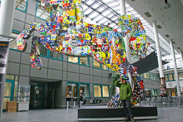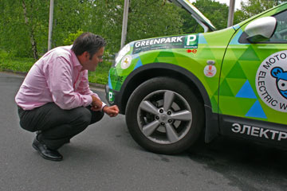
Goslar Tidende fik et lyninterview med os om morgenen, hvorefter vi rullede lydløst nordpå til Hannover. Continental har været en god sponsor af elbilrejsen. Klaus Engelhart og Markus Fischer tog imod os i kæmpefirmaets hovedkarter i Hannover. Flere tusind mennesker arbejder her med udvikling af dæk. For at muliggøre et bedre kompromis mellem rullemodstand og vejgreb eksperimenterer Continental med at gøre dæk større, fx. 20 tommer. Vi fik også tid til at fortælle Hannovers presse om vores rejse. Ved Sølvsøen udenfor Celle fandt vi en lille campingplads. Længe sad vi på en bænk og nød solen. Om morgenen var der is på teltet, men vi havde sovet godt.
Hjalte
Idag kørte vi ind i Harzen. Det havde sneet lidt, og det var isnende koldt. Flere gange krydsede vi det der indtil 1989 var mineret grænseland mellem øst-og vesttyskland. Vi varmede os lidt i Braunlage, nær Bloksbjerg. Overalt vrimlede det med hekse, så vi kørte hurtigt videre til Goslar. Som tiårig var jeg i Goslar sammen med min mor. Vi boede på vandrehjemmet. Nu er det blevet moderniseret og er fire gange så stort, men stadig hyggeligt. Inden vi vandrede ned i byen fik Grønne et elstik på siden af huset. Nede i Goslars bymidte var der mange velholdte og smukt istandsatte gamle huse. Gader og stræder virkede meget større end jeg huskede det, der var blevet ryddet op og gjort plads til flere turister. På torvet oplevede Hjalte og jeg rådhusets klokkespil med figurer af minearbejdere som kom frem på klokkeslaget.
Nina
 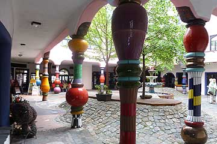
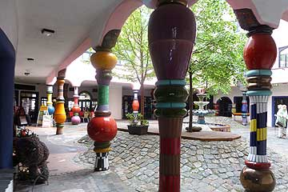
Vi forlod Raffaufernes store hus med kurs mod Bloksbjerg. Spiste kebab undervejs og snuppede en times strøm i Magdeburg med hundertwasser-huset . Vejret var skiftet, det småregner og blæste koldt. Så om aftenen opgav vi at finde campingpladsen i Halberstadt og fandt i stedet for Wehrstedter Hof, et lille venligt krohotel. Jeg havde allerede sagt ja til et dobbeltværelse med morgenmad, da jeg kom i tanke om at Grønne skulle have strøm, Heldigvis og tilfældigvis havde de et stik stærkstrøm ude ved hotellets parkeringsplads - hvor heldig kan man være?
Nina


Første majdagen fejres stort i Berlin med fest og slagsmål. Mange biler bliver hvert år brændt af, så vi foretrak at forlade byen. På vejen til Potsdam var Grønne ved at løbe ud for strøm. Hans, som kørte bilen fandt et godt elstik på en Aral tank - helt usædvanligt at finde strøm på en tankstation. Vi ladede i en halv time, og kunne så køre videre til Hans´s forældres store hus i Potsdam. Tre søstre og en kusine hoppede trampolin i haven. Walter og Christiane bød os hjertelig velkommen, og tog Hjalte og mig med på en tur rundt til omegnens forskellige slotte, en russisk kirke og et hollandsk kvarter. På hjemvejen købte vi friskplukkede asparges som vi spiste til aftensmaden, hvor der blev dækket op til hele familien omkring det store middagsbord.
Nina
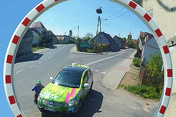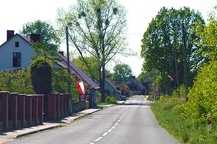
Polen er nu et EU land, og den gamle grænsestation stod tom og forladt. I Kostrzyn havde vi brug for mere strøm. Det fik vi på et autoværksted, som desværre lukkede en time senere. Vi kørte langs Oderfloden ad små veje gennem et stort område med søer og sumpe og en landsby med storke. Nær grænseovergangen var der et stort marked i et gammelt industriområde. Juras Auto Serwis var lukket men havde et strømstik udenfor. Tak Juras! På markedet købte vi russisk champagne, tjekkisk øl, polsk honning og spiste tyske pølser. Så var det tid at køre hjemad gennem landsbyer og lysegrønne skove, med mange mindesmærker over de døde i 2. verdenskrig. Efter en interessant dag i Polen vendte vi hjem til Berlin, helt øre af forår og solskin.
Nina
 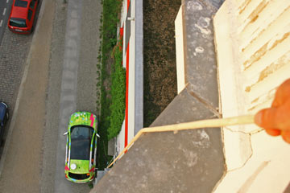
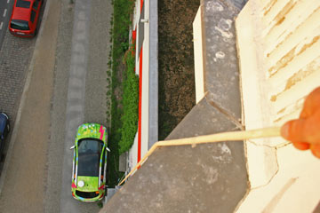
Jeg, Grønne, blev næsten svimmel af alle de blitzlyn der blinkede rundt om mig. BEM, den tyske Forening for Elektrisk Mobilitet, havde arrangeret et møde med pressen foran deres kontor i Berlin. Jeg så Nina og Hjalte tale med en masse journalister og folk fra Berlins bystyre. Det var altsammen OK, men hvorfor havde de ikke givet mig et bad inden jeg skulle posere? Men måske var det alligevel ikke så vigtigt, for Bild.de, Tysklands næst-største netmedie, havde mig på forsiden næste dag. I kan finde artiklen på http://www.bild.de/auto/auto-news/nissan-qashqai/weltumrundung-mit-elektroauto-17644512.bild.html Om aftenen kørte Nina og Hjalte på sightseeing i Berlin og til sidst satte de mig til at lade fra Ida og Hans' lejlighed med mit meget lange kabel.
Mange hilsner, Grønne
 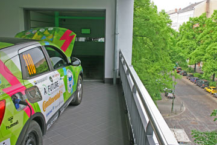
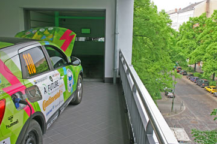
I en kirke så vi et billede af det hus Ida og Hans bor i. Det lå klods op af Muren. Nu er muren væk og Berlin bobler af ideer til fremtiden. I Kreutzberg fik Grønne demonstreret et hus med elevator så bilen kunne parkere i lejligheden. Samme dag tog Hans os med til sit arbejde i "Beta-haus", et efterspurgt kontorfællesskab for iværksættere. Her talte vi med Christian Geiss fra Daimler Benz som nu introducerer Smart-delebiler i storbyer over hele verden. I Amsterdam med elektriske Smart-cars: mindre co2 og mindre m2. Og Daimler får kunder blandt unge som ellers slet ikke køber biler. Berlin har historien helt tæt på, men også plads til fremtiden, og det gør byen så spændende.
Hjalte
Frank Müller udlånte fire elektriske cykler til Hans, Ida, Hjalte og jeg. Hans tog Elliot i en sele på ryggen og så susede hele familien ud i Berlins bytrafik på otte hjul. Undervejs kom vi, til Elliots store fryd til et lille cirkus med lamaer på græs rundt om cirkusteltet. Senere på dagen traf Hjalte og jeg en mand som inviterede os til at se et hus hvor der var l en elevator som kunne bringe bilerne med op. Der stod Grønne så i højde med trætoppene og nød udsigten fra tredje sal. Vi fik en kop kaffe inde i den store kontorlejlighed, og grønne fik en strøm fra en stikkontakt. Lidt efter kørte vi og Grønne ned med elevatoren. Grønne var en ret lettet da den kørte ud af elevatoren og igen fik asfalt under dækkene.
Nina
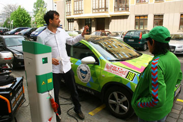
I Berlin ligger der en gade som hedder Wall Strasse. Nu hjemsted for BEM, Bundesverband eMobilitet, som minder lidt om Dansk Elbil Alliance. Lederen Frank Müller viser stolt de otte spritnye ladestandere frem som står ned gennem gaden: Berlins elektriske Wall Street! De eneste ladestandere vi har mødt på rejsen hvor man kan få strøm og p-plads med møntindkast. Grønne er første elbil der lader her og alle er ude og fotografere. Rundt om hjørnet er der tyrkisk marked og libanesiske restauranter. Om aftenen lader vi ladestandere være ladestandere og trækker et kabel fra vinduet på Ida og Hans' 4. sals lejlighed ned til Grønne. Det virker også.
Hjalte